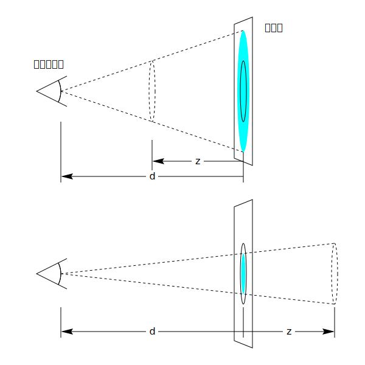
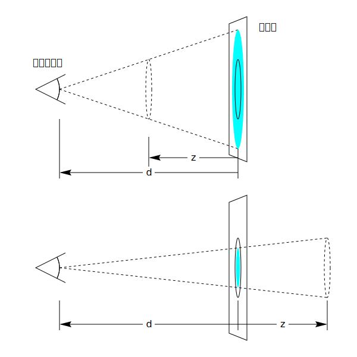

CSS Transform （変形, 座標系変換）は、要素を~2Dや~3D空間~内で変形するように~CSSで~style付け可能にする。
◎
CSS transforms allows elements styled with CSS to be transformed in two-dimensional or three-dimensional space.
この仕様は、~3D変形~用の新たな［
変形~関数／~prop
］, および 単純な変形~用の便利~関数を追加する。
◎
This spec adds new transform functions and properties for three-dimensional transforms, and convenience functions for simple transforms.
この仕様は、 `css-transforms-1$r を拡張する差分~仕様であり，作者が要素を~3D空間~内で変形できるようにする。
`transform$p ~prop用の新たな`~3D変形-関数$により，~3D変形が可能になる。
加えて，~3D変形で作業し易くするための追加的な~propもあり、作者は，入子にされた~3D変形の~~作用についての制御も可能になる。
◎
This specification is a delta spec that extends [css-transforms-1] to allow authors to transform elements in three-dimensional space. New transform functions for the transform property allow three-dimensional transforms, and additional properties make working with three-dimensional transforms easier, and allow the author to control how nested three-dimensional transformed elements interact.
`perspective$p ~propは、遠近法による変形nを~~追加で伴う子~要素を，作者が供することを許容する。
◎
The perspective property allows the author to provide child elements with an extra perspective transformation.＼
`perspective-origin$p ~propは、遠近法が適用される原点についての制御を供し，それにより実質的な “消失点” の所在を変えられる。
◎
The perspective-origin property provides control over the origin at which perspective is applied, effectively changing the location of the "vanishing point".
`transform-style$p ~propは、~3D変形された要素, その~3D変形された子孫たちを，同じ~3D空間に共存させ、~3D~obj階層の構築を可能にする。
◎
The transform-style property allows 3D-transformed elements and their 3D-transformed descendants to share a common three-dimensional space, allowing the construction of hierarchies of three-dimensional objects.
`backface-visibility$p ~propは、要素が，その裏側が`視点$から可視になるように，~3D変形を通して反転されているときに、効力を発揮する。
その種の要素は，隠される方が望ましい状況もあるが、この~propに対する値 `hidden^v の利用が，それをアリにする。
◎
The backface-visibility property comes into play when an element is flipped around via three-dimensional transforms such that its reverse side is visible to the viewer. In some situations it is desirable to hide the element in this situation, which is possible using the value of hidden for this property.
注記：
`transform$p ~propの一部の値は，要素を ~3D座標系において変形するが、その要素~自身は~3D~objにはされない。
それらは~2D平面~内に存在し，奥行きを持たない。
◎
Note: While some values of the transform property allow an element to be transformed in a three-dimensional coordinate system, the elements themselves are not three-dimensional objects. Instead, they exist on a two-dimensional plane (a flat surface) and have no depth.
この仕様はまた、単純な変形を容易に［
記述-／~animate
］できるよう， 3 種の便利~prop［
`scale$p, `translate$p, `rotate$p
］も追加する。
◎
This specification also adds three convenience properties, scale, translate and rotate, that make it easier to describe and animate simple transforms.
1.1. ~module間の相互作用
ここでの`~3D変形-関数$は、 `transform$p ~propがとり得る関数の集合を拡張する。
◎
The 3D transform functions here extend the set of functions for the transform property.
［
`perspective$p ／ `transform-style$p ／ `backface-visibility$p
］用の一部の値は、`積層~文脈$や`すべての子孫~用の包含塊$を作成する。
◎
Some values of perspective, transform-style and backface-visibility result in the creation of a containing block for all descendants, and/or the creation of a stacking context.
~3D変形は，要素の視覚的な積層順に影響し、
`CSS21$r の
付録 E
に述べられている，奥から手前にかけての塗ng順序を上書きする。
◎
Three-dimensional transforms affect the visual layering of elements, and thus override the back-to-front painting order described in Appendix E of [CSS21].
◎
In addition to the identity transform function in CSS Transforms, examples for identity transform functions include translate3d(0, 0, 0), translateZ(0), scaleZ(1), rotate3d(1, 1, 1, 0), rotateX(0), rotateY(0), rotateZ(0) and matrix3d(1, 0, 0, 0, 0, 1, 0, 0, 0, 0, 1, 0, 0, 0, 0, 1). A special case is perspective: perspective(infinity). The value of m34 becomes infinitesimal small and the transform function is therefore assumed to be equal to the identity matrix.
`透視~行列@
◎
perspective matrix
［
`perspective$p, `perspective-origin$p
］~propの値から，
後述の様に
算出される行列。
◎
A matrix computed from the values of the perspective and perspective-origin properties as described below.
`累積~3D変形n行列@
◎
accumulated 3D transformation matrix
要素に対し，その`~3D描画~文脈$の根に相対的に算出される行列
— ~~詳細は `§ 累積~3D変形n行列の算出$に。
◎
A matrix computed for an element relative to the root of its 3D rendering context, as described below.
`~3D描画~文脈@
◎
3D rendering context
同じ~3D座標系に共存するような、先祖が共通な要素の集合。
~~詳細は
§ ~3D描画~文脈に。
◎
A set of elements with a common ancestor which share a common three-dimensional coordinate system, as described below.
◎
A <transform-list> for the computed value is serialized to either one <matrix()> or one <matrix3d()> function by the following algorithm:
• Let transform be a 4x4 matrix initialized to the identity matrix. The elements m11, m22, m33 and m44 of transform must be set to 1 all other elements of transform must be set to 0.
• Post-multiply all <transform-function>s in <transform-list> to transform.
• Chose between <matrix()> or <matrix3d()> serialization:
•• If transform is a 2D matrix
••• Serialize transform to a <matrix()> function.
•• Otherwise
••• Serialize transform to a <matrix3d()> function.
この~textに `CSS Transforms 1^cite の~textを追加して修正する。
◎
fix this text to add to the text in CSS Transforms 1.
3. ~2Dに限定された機能
~UA は~3D変形を描画できるとは限らず，この仕様の~2Dに限定された機能のみを~supportすることもある。
この場合：
◎
UAs may not always be able to render three-dimensional transforms and then just support a two-dimensional subset of this specification. In this case＼
`~3D変形$, および［
`transform-style$p,
`perspective$p,
`perspective-origin$p,
`backface-visibility$p
］~propは、~supportされてはならない。
◎
three-dimensional transforms and the properties transform-style, perspective, perspective-origin and backface-visibility must not be supported.＼
`§ ~3D変形による描画$は適用されない。
◎
Section 3D Transform Rendering does not apply.＼
行列の分解-法は
“`Graphics Gems II, edited by Jim Arvo^cite”
による “`unmatrix^en” 手法を~2Dの場合に単純~化した技法を利用する。
◎
Matrix decomposing uses the technique taken from the "unmatrix" method in "Graphics Gems II, edited by Jim Arvo", simplified for the 2D case.＼
`§ 変形-関数の数学的~記述$は，依然として有効であるが、下図に示すような~3x3変形n行列を利用して~~縮退できる
— ここで図の［
%a, %b, %c, %d, %e, %f
］は、順に［
`11^M, `12^M, `21^M, `22^M, `41^M, `42^M
］に対応する（ 6 ~~成分からなる `~2D~3x2行列$を見よ）：
◎
Section Mathematical Description of Transform Functions is still effective but can be reduced by using a 3x3 transformation matrix where a equals m11, b equals m12, c equals m21, d equals m22, e equals m41 and f equals m42 (see A 2D 3x2 matrix with six parameter).
`3x3matrix^dgm
~2D変形n用の~3x3行列
◎
3x3 matrix for two-dimensional transformations.
~UAが~3D変形を~supportしない場合の~fallbackも供し易くなる。
次の例に 2 つの `transform$p ~prop定義を示す。
1 個目のものは 2 個の~2D変形-関数からなり， 2 個目のものは ~2Dと~3Dの変形-関数を持つ。
◎
Authors can easily provide a fallback if UAs do not provide support for three-dimensional transforms. The following example has two property definitions for transform. The first one consists of two two-dimensional transform functions. The second one has a two-dimensional and a three-dimensional transform function.
~3D~supportがあれば， 2 個目の定義が 1 個目のものを上書きすることになる。
~3D~supportが無ければ， 2 個目の定義は無効になり，~UAは 1 個目の定義に~fall-backする。
◎
With 3D support, the second definition will override the first one. Without 3D support, the second definition is invalid and a UA falls back to the first definition.
4. 変形の描画~model
この仕様は、次に挙げるものを織り込むために，
`CSS-TRANSFORMS-1$r
§ 変形~描画~model
を拡張する
⇒＃
~3D変形-関数の存在,
`transform-origin$p の Z 値,
`perspective$p ~prop,
`transform-style$p ~propの使用~値が `preserve-3d^v になるときに適用される 新たな 3D描画~model
◎
This specification extends CSS Transforms 1 §3 The Transform Rendering Model to account for the existence of three-dimensional transform functions, the Z value of transform-orign, the perspective property, and a new 3D rendering model that applies when the used value of the transform-style property is preserve-3d.
`~3D変形-関数$は、画面に垂直かつ視点に向けて増大する Z 軸を加えることで，~2D座標~空間を概念的に~3Dに拡張する。
◎
Three-dimensional transform functions conceptually extend the coordinate space into three dimensions, adding a Z axis perpendicular to the plane of the screen, that increases towards the viewer.
`coordinates^dgm
初期~時の座標~空間のデモ。
◎
Demonstration of the initial coordinate space.
~3D変形では， `transform-origin$p の Z 成分が結果に影響するので、`変形n行列$は［
`transform$p, `transform-origin$p
］~propから算出される。
それは、単位i行列に対し，以下に与える各~変形nを順に累積して得られる
【各~変形nを表現する行列を，所与の順に右から乗算する】：
◎
With 3D transforms, the Z component of transform-origin affects the result, so the transformation matrix is computed from the transform and transform-origin properties as follows:
• Start with the identity matrix.
`transform-origin$p の算出d値で与えられる ( X, Y, Z ) による並進
【その移動量による`~3D並進$】
◎
Translate by the computed X, Y and Z of transform-origin
`transform$p ~prop値に~listされた順で与えられる，各~変形-関数
◎
Multiply by each of the transform functions in transform property from left to right
最初の段に与えた ( X, Y, Z ) 値による，逆方向への並進
【最初の段の~3D並進の逆行列】
◎
Translate by the negated computed X, Y and Z values of transform-origin
4.1. ~3D変形による描画
通常は、要素は平面的に，要素が属する`積層~文脈$と同じ平面に埋め込まれるように描画される。
大抵の場合、それは~pageの残りの部分と共有される平面になる。
~2D変形-関数は要素の外観を改め得るが、描画される平面は，依然として要素が属する積層~文脈と同じになる。
◎
Normally, elements render as flat planes, and are rendered into the same plane as their stacking context. Often this is the plane shared by the rest of the page. Two-dimensional transform functions can alter the appearance of an element, but that element is still rendered into the same plane as its stacking context.
~3D変形を伴う要素のうち，`~3D描画~文脈$に包含されていないものは、適切な変形を適用して描画されるが，他のどの要素とも交差しない。
この事例における~3D変形は、~2D変形と同様に，単なる塗ng効果と見なせる。
同様に，その変形は、塗ng順序にも影響しない。
例えば，正な Z 並進を伴う変形は、要素の見かけを大きくし得るが，その要素を Z にて並進が無い要素の前面に描画させることはない。
◎
An element with a three-dimensional transform that is not contained in a 3D rendering context renders with the appropriate transform applied, but does not intersect with any other elements. The three-dimensional transform in this case can be considered just as a painting effect, like two-dimensional transforms. Similarly, the transform does not affect painting order. For example, a transform with a positive Z translation may make an element look larger, but does not cause that element to render in front of elements with no translation in Z.
入子にされた~3D変形d要素をどう描画するか述べる（たぶん，数学的に)
◎
describe how nested 3d-transformed elements render (perhaps with math)
この例は、上の~textに従っていない。
◎
This example doesn’t follow from the previous text.
要素に適用される~3D変形の効果を，次の例に示す：
◎
This example shows the effect of three-dimensional transform applied to an element.
変形は 縦方向の Y 軸を中心に 50° 回転させる。
これにより，青色の~boxは狭小に現れるが、~3Dではない。
◎
The transform is a 50° rotation about the vertical, Y axis. Note how this makes the blue box appear narrower, but not three-dimensional.
4.1.1. 遠近法
遠近法（ `perspective$p ~prop）を利用すれば、風景に奥行き感を与えられる
— 要素は、その Z 座標（以下 %z ）を高くする（`視点$に近付ける）ほど，より大きく現れ、低くする（`視点$から遠ざける）ほど，より小さく現れる。
拡縮率は［
%d ÷ ( %d − %z )
］に比例する。
ここで， %d は `perspective$p の値であり，画面から視点と見做される地点（下図の “みなし~~視点”
【！Assumed Eye Position】
）までの距離を与える。
◎
Perspective can be used to add a feeling of depth to a scene by making elements higher on the Z axis (closer to the viewer) appear larger, and those further away to appear smaller. The scaling is proportional to d/(d − Z) where d, the value of perspective, is the distance from the drawing plane to the the assumed position of the viewer’s eye.
`~3D変形d要素$に遠近法の外観を適用する仕方には、次の 2 つがある：
◎
The appearance of perspective can be applied to a 3d-transformed element in two ways.＼
要素の “変形-関数~list” は、 `perspective$f 関数を包含でき，要素の現在の`変形n行列$の中で算出する。
◎
First, the element’s 'transform function list' can contain the perspective() function which computes into the element’s 'current transformation matrix'.
要素には、［
`perspective$p, `perspective-origin$p
］~propを［
~3D変形された子の描画
］に波及するように適用でき、子たちが同じ~3D風景~内に住まうような印象を供するような，それらに共有される遠近法を与える。
◎
Second, the perspective and perspective-origin properties can be applied to an element to influence the rendering of its 3d-transformed children, giving them a shared perspective that provides the impression of them living in the same three-dimensional scene.
`perspective_distance^dgm
拡縮-法が `perspective$p ~propと Z 位置に依存する様子を示す図式。
上段の図式では， %z が %d の半分にされている。
元の円（実線）が %z （点線の円）の所に現れるようにするため、円は 2 倍に拡大され，水色の円で示されるものになる。
下段の図式では、円は 2 ÷ 3 倍に縮小されて，元の位置の背後に現れる。
◎
Diagrams showing how scaling depends on the perspective property and Z position. In the top diagram, Z is half of d. In order to make it appear that the original circle (solid outline) appears at Z (dashed circle), the circle is scaled up by a factor of two, resulting in the light blue circle. In the bottom diagram, the circle is scaled down by a factor of one-third to make it appear behind the original position.
通常は、`視点$と見做される地点は，絵図の中心（真正面）にある。
欲されるなら `perspective-origin$p を設定して，この位置を移動することもできる
—
例えば、~page内の複数の絵図が，同じ遠近法を共有すべき場合など。
◎
Normally the assumed position of the viewer’s eye is centered on a drawing. This position can be moved if desired – for example, if a web page contains multiple drawings that should share a common perspective – by setting perspective-origin.
`perspective_origin^dgm
遠近法の原点を上方へ移動する効果を示す図式。
◎
Diagram showing the effect of moving the perspective origin upward.
`透視~行列$は、単位i行列に対し，以下に与える各~変形nを順に累積する
【各~変形nを表現する行列を，所与の順に右から乗算する】
ことにより算出される：
◎
The perspective matrix is computed as follows:
• Start with the identity matrix.
`perspective-origin$p の算出d値で与えられる ( X, Y ) 値による並進
【その移動量による`~2D並進$】
◎
Translate by the computed X and Y values of perspective-origin
［
`perspective$p ~propの値から供される長さ値
］を引数にとる `perspective$f 変形-関数から得される行列
【`透視~投影~行列$】
◎
Multiply by the matrix that would be obtained from the perspective() transform function, where the length is provided by the value of the perspective property
最初の段に与えた ( X, Y ) 値による，逆方向への並進
【最初の段の~2D並進の逆行列】
◎
Translate by the negated computed X and Y values of perspective-origin
次の例に、~3D変形が より本物らしく現れるようにするための， `perspective^p の利用を示す：
◎
This example shows how perspective can be used to cause three-dimensional transforms to appear more realistic.
内縁にある要素は，前の例と同じ変形を持つが、その描画は今や，その親~要素~上の `perspective^p ~propから~~影響を受けている。
`perspective^p により、絵図の中の点の X, Y 座標は、その Z 座標が（`視点$により近い）正である所では，拡大される一方，（`視点$からより遠い）負な所では縮小され、外観に奥行き感が与えられる。
◎
The inner element has the same transform as in the previous example, but its rendering is now influenced by the perspective property on its parent element. Perspective causes vertices that have positive Z coordinates (closer to the viewer) to be scaled up in X and Y, and those further away (negative Z coordinates) to be scaled down, giving an appearance of depth.
4.1.2. ~3D描画~文脈
この節では、~3D変形, および `transform-style$p ~propを利用する内容を描画するための~modelを指定する。
この~modelを述べるため、 “~3D描画~文脈” の概念を導入する。
◎
This section specifies the rendering model for content that uses 3D-transforms and the transform-style property. In order to describe this model, we introduce the concept of a "3D rendering context".
`~3D描画~文脈$は、［
~3D変形を描画する目的において，同じ~3D座標系に共存すると見なされるような，共通な先祖
］を根とする要素の集合である。
~3D描画~文脈における要素の手前から奥への描画は，その~3D空間における z 位置に依存し、~3D変形により要素が互いに交差するときは，その交差を伴って描画される。
◎
A 3D rendering context is a set of elements rooted in a common ancestor that, for the purposes of 3D-transform rendering, are considered to share a common three-dimensional coordinate system. The front-to-back rendering of elements in the a 3D rendering context depends on their z-position in that three-dimensional space, and, if the 3D transforms on those elements cause them to intersect, then they are rendered with intersection.
その~3D空間における各~要素の位置は、要素から その`~3D描画~文脈$を確立した要素まで，それぞれの変形n行列を累積することにより決定される。
◎
The position of each element in that three-dimensional space is determined by accumulating the transformation matrices up from the given element to the element that establishes the 3D rendering context.
要素は、次に従って~3D描画~文脈［
を確立する／に関与する
］：
◎
Elements establish and participate in 3D rendering contexts as follows:
◎
A 3D rendering context is established by a transformable element whose used value for transform-style is preserve-3d and which itself is not part of a 3D rendering context. An element that establishes a 3D rendering context also participates in that context.
◎
An element whose used value for transform-style is preserve-3d and which itself participates in a 3D rendering context, extends that 3D rendering context rather than establishing a new one.
要素は、その親が~3D描画~文脈を［
確立する／拡張する
］ならば，`~3D描画~文脈$に関与する。
◎
An element participates in a 3D rendering context if its parent establishes or extends a 3D rendering context.
~CSS~propには、要素が他の要素と組成される前に，要素 およびその子孫たちを~groupとして描画するよう要求するような、 “~group化” を強制する値をとるものがある。
これらには、不透明度, ~filter, 切抜きに影響する~propも含まれる。
これに関連な~prop値は、`~group化~prop値$に挙げる。
その帰結として，
`transform-style$p `preserve-3d^v にされた要素に利用されたときは、その使用~値を `flat^v に変更し，要素が`~3D描画~文脈$を［
作成-／拡張-
］させなくする。
◎
Some CSS properties have values that are considered to force "grouping": they require that their element and its descendants are rendered as a group before being composited with other elements; these include opacity, filters and properties that affect clipping. The relevant property values are listed under grouping property values. Consequently, when used on an element with transform-style:preserve-3d, they change the used value to flat and prevent it from creating or extending a 3D rendering context.
これは、~3D変形d要素の中の未~変形dな内容を，どう取扱うか述べていない
— ~algoは、おそらく再帰的になる必要がある。
課題：様々な~engineにおける現在の挙動は何か~~解明して、~web互換性を壊さないよう，もっと明瞭な記述を~~解明する。
◎
This doesn’t describe how untransformed content within a 3D transformed element is handled, the alogrithm probably needs to be recursive. Issue: Figure out what the current behaviour of various engines is, and figure out a clearer description that wont break web compat.
~3D描画~文脈に属する要素の描画は、次の様になる
— 以下、その~3D描画~文脈を確立している要素を %R と記す（括弧内の “step %数字” は
CSS 2.1, Appendix E.2 塗ng順序
のそれを表す）：
◎
The rendering of elements in a 3D rendering context is as follows (numbers refer to items in CSS 2.1, Appendix E, Section E.2 Painting Order):
%R の背景, ~border, 他の~box装飾が描画される（ step 1, 2 ）
◎
The background, borders and other box decorations of the establishing element are rendered (steps 1 and 2)
3D 変形を伴わない［
内容, および子孫~要素
］は、 step 3 〜 7 に則って順序~付けられ，
%R に相対的な z=0 平面に描画される
◎
The content and descendant elements without 3D transforms, ordered according to steps 3—7, are rendered into a plane at z=0 relative to to the establishing element.
`~3D変形d要素$は，それぞれの自前の平面に`累積~3D変形n行列$により変形されて描画される。
◎
3D-transformed elements are each rendered into their own plane, transformed by the accumulated 3D transformation matrix.
`Newell の~algo^_
に則って，段 B, C で生成された平面の集合~間で，交差が遂行される。
◎
Intersection is performed between the set of planes generated by steps B and C, according to Newell’s algorithm.
結果の平面の集合が、段 A にて描画された背景と~box装飾の上に，描画される。
同一~平面にある`~3D変形d要素$たちは、塗ng順序で描画される。
◎
The resulting set of planes is rendered on top of the backgrounds and box decorations rendered in this step A. Coplanar 3D transformed elements are rendered in painting order.
~2D`変形d要素$たちを それぞれの自前の平面の中へ pop しなくて大丈夫か？
◎
is it OK to not pop 2D-transformed elements into their own planes?
未~変形dな内容とその子孫に交差を要求した場合、~UAは，追加的な~textureを割振らなければならなくなる（~memory消費が倍になり得る）。
内容と未~変形dな子孫を，単に背景と~borderに従って描画する方がより効率的になるであろう。
◎
requiring intersection with non-transformed content and descendants requires UAs to allocate additional textures (possibly doubling memory use). Would be more efficient to simply render content and untransformed descendants along with background and borders.
z-成分が負にされた変形を伴う要素は，［
内容, および %R の非~変形 子孫
］の背後に描画されることに注意。
したがって `~3D変形d要素$は、内容と非`変形d要素$に浸出し得る。
◎
Note that elements with transforms which have a negative z-component will render behind the content and untransformed descendants of the establishing element, and that 3D transformed elements may interpenetrate with content and untransformed elements.
注記：
~3D描画~文脈における`~3D変形d要素$は、深度~順に基づいて互いに交差し得るので、実質的に，互いに同胞であるかのように描画される。
`transform-style^p: `preserve-3d^v
による効果は、~3D描画~文脈に属する どの`~3D変形d要素$も，
%R の下に巻上げられつつ，依然として自身の`累積~3D変形n行列$により描画されるようになるものと，捉えられる。
◎
Note: Because the 3D-transformed elements in a 3D rendering context can all depth-sort and intersect with each other, they are effectively rendered as if they were siblings. The effect of transform-style: preserve-3d can then be thought of as causing all the 3D transformed elements in a 3D rendering context to be hoisted up into the establishing element, but still rendered with their accumulated 3D transformation matrix.
この例は、~3D描画~文脈~内の要素が互いに交差し得ることを示す。
`.container^css 要素は，自身とその 2 個の子孫に対する~3D描画~文脈を確立し、
`.scene^css 要素は，~3D描画~文脈に遠近法を追加する。
子は互いに交差し、橙色にされた要素は，容器と互いに交差する。
◎
This example shows show elements in a 3D rendering context can intersect. The container element establishes a 3D rendering context for itself and its two children, and the scene element adds perspective to the 3D rendering context. The children intersect with each other, and the orange element also intersects with the container.
この例は、入子にされた~3D変形の描画の様子を示すものである。
青色の `div^e は，前の例の様に、その描画が その親~要素~上の遠近法（ `perspective^p ）の~~影響を受けて，変形される。
黄緑色の要素も，（ `transform-origin$p の効力により，青色の `div^e の上端に固定された） X 軸を中心に回転される，~3D変形を持つ —
しかしながら，同じ~3D描画~文脈には属さないので、親は平坦になる。
そのため、黄緑色の要素は短く現れ，青色の要素から “飛び出す” ことはない。
◎
This example shows how nested 3D transforms are rendered. The blue div is transformed as in the previous example, with its rendering influenced by the perspective on its parent element. The lime element also has a 3D transform, which is a rotation about the X axis (anchored at the top, by virtue of the transform-origin). However, the lime element is being rendered into the plane of its parent because it is not a member of the same 3D rendering context; the parent is flattening. Thus the lime element only appears shorter; it does not "pop out" of the blue element.
`3d-rendering-context-flat^dgm
4.1.3. 変形d要素の階層
`変形d要素$は，既定では、`~3D描画~文脈$を作成せず，自身の内容の平坦~化された表現を作成する。
この平坦~化する挙動は、
`transform-style$p ~propに値 `preserve-3d^v を指定して上書きできる
— それは、同じ~3D空間に共存する，変形された~objたちが成す階層を構築するために有用になる。
これにより、`変形d要素$の子孫たちが，同じ~3D描画~文脈に共存できるようになる。
その種の要素の~3D変形されていない子孫たちは、上述の段 C における要素の平面に描画される一方、同じ~3D描画~文脈に共存する`~3D変形d要素$は、それぞれの自前の平面から “飛び出す” 。
◎
By default, transformed elements do not create a 3D rendering context and create a flattened representation of their content. However, since it is useful to construct hierarchies of transformed objects that share a common 3-dimensional space, this flattening behavior may be overridden by specifying a value of preserve-3d for the transform-style property. This allows descendants of the transformed element to share the same 3D rendering context. Non-3D-transformed descendants of such elements are rendered into the plane of the element in step C above, but 3D-transformed elements in the same 3D rendering context will "pop out" into their own planes.
この例は、青色の要素~上に
`transform-style$p: `preserve-3d^v
が追加されたことを除いて，前の例と一致する。
青色の要素は今や，その容器の~3D描画~文脈を拡張する。
それにより，青色と黄緑色の両~要素が同じ~3D空間に共存するので、黄緑色の要素は，容器~上の遠近法の~~影響を受け，その親から【~3D的に】傾けられて描画される。
◎
This example is identical to the previous example, with the addition of transform-style: preserve-3d on the blue element. The blue element now extends the 3D rendering context of its container. Now both blue and lime elements share a common three-dimensional space, so the lime element renders as tilting out from its parent, influenced by the perspective on the container.
［
`~3D描画~文脈$に属する要素を描画する際に利用される変形
］の最終的な値は、次の様に，~3D変形n行列を累積して算出される：
◎
The final value of the transform used to render an element in a 3D rendering context is computed by accumulating an accumulated 3D transformation matrix as follows:
%M ~LET 単位i行列
◎
Let transform be the identity matrix.
%現在の要素 ~LET 対象の変形d要素
◎
Let current element be the transformed element.
%親 ~LET %現在の要素 の親
◎
Let parent element be the parent element of the transformed element.
%根 ~LET %現在の要素 の`~3D描画~文脈$を確立した要素
◎
↓
~WHILE ( %現在の要素 ~NEQ %根 )：
◎
While current element is not the element that establishes the transformed element’s 3D rendering context:
~IF［
%現在の要素 上の `transform$p 値 ~NEQ `~none0$v
］
⇒
%M に［
%現在の要素 の`変形n行列$
］を`左から乗算-$する
◎
If current element has a value for transform which is not none, pre-multiply current element’s transformation matrix with the transform.
%M に［
%現在の要素 の %親 からの~offsetを表現する並進~行列
］を`左から乗算-$する
◎
Compute a translation matrix which represents the offset of current element from its parent element, and pre-multiply that matrix into the transform.
~IF［
%親 の `perspective$p 値 ~NEQ `none$v
］
⇒
%M に［
%親 の`透視~行列$
］を`左から乗算-$する
◎
If parent element has a value for perspective which is not none, pre-multiply the parent element’s perspective matrix into the transform.
%現在の要素 ~SET %親
◎
Let current element be the parent element.
%親 ~SET %現在の要素 の親
◎
Let parent element be the current element’s parent.
~RET %M
注記：
ここに述べたように，`累積~3D変形n行列$は、［
変形d要素~上の
視覚-整形~model
, および［
変形d要素から それの`~3D描画~文脈$を確立した要素までにある，先祖の連鎖~内の要素
］］により生成された~offset織り込む。
◎
Note: as described here, the accumulated 3D transformation matrix takes into account offsets generated by the visual formatting model on the transformed element, and elements in the ancestor chain between the transformed element and the element that establishes the its 3D rendering context.
4.1.5. 背面の可視性
~3D変形を利用すれば、要素を，その裏側が可視になるよう変形することもアリになる。
`~3D変形d要素$は，その両側にて同じ内容を示すので、裏側は表側の鏡像に見えるようになる（要素を鏡に映し出したかのように）。
通常は、裏側を向けている要素は，視点から可視であり続けるが、
`backface-visibility$p ~propにより，要素を その裏側が視点に向いているときには不可視にさせられる。
この挙動は “~~動的（ `live^en ）” である
— 例えば，
`backface-visibility$p: `hidden^v
にされた要素が，その表側と裏側が交互に可視になる様に~animateされている場合、表側が視点に向くときにのみ可視になる
◎
Using three-dimensional transforms, it’s possible to transform an element such that its reverse side is visible. 3D-transformed elements show the same content on both sides, so the reverse side looks like a mirror-image of the front side (as if the element were projected onto a sheet of glass). Normally, elements whose reverse side is towards the viewer remain visible. However, the backface-visibility property allows the author to make an element invisible when its reverse side is towards the viewer. This behavior is "live"; if an element with backface-visibility: hidden were animating, such that its front and reverse sides were alternately visible, then it would only be visible when the front side were towards the viewer.
要素の裏側の可視性は，`累積~3D変形n行列$を利用して考慮されるので、`~3D描画~文脈$を確立している要素の親に相対的になる。
【可視性は、この親に垂直な方向から決まる？】
◎
Visibility of the reverse side of an element is considered using the accumulated 3D transformation matrix, and is thus relative to the parent of the element that establishes the 3D rendering context.
注記：
この~propは、遊戯用~cardを作成するときのように， 2 個の要素を裏表に貼り合わせるときに有用になる。
この~propが無ければ、表面と裏面の要素は，~animationで~cardが裏返される度に互いの~~位置を交換することになる【従って、常に片方しか見えない】。
別の例として、 6 要素で囲まれた直方体の内面だけを見せたいときが挙げられる。
◎
Note: This property is useful when you place two elements back-to-back, as you would to create a playing card. Without this property, the front and back elements could switch places at times during an animation to flip the card. Another example is creating a box out of 6 elements, but where you want to see only the inside faces of the box.
次の例に、 "#card" 要素が~clickされたときに裏返されるように見せる方法を示す。
裏返すときに平坦にならないようにするため、
#card 上には
`transform-style^p: `preserve-3d^v
を要することに注意。
◎
This example shows how to make a "card" element that flips over when clicked. Note the "transform-style: preserve-3d" on #card which is necessary to avoid flattening when flipped.
`backface-visibility^p は
非~変形d要素／ ~2D`変形d要素$には どう影響iする？
それぞれの自前の平面の中へ 【！＊】 `pop^en され, 交差するのか？【？】
◎
what is the impact of backface-visibility on non-transformed or 2D-transformed elements? Do they get popped into their own planes and intersect?
4.2. 遠近法により変形された~boxの処理-法
これは、供された行列を利用して 要素をどの程度~正確に変形するかを，精確に指定するための最初の試案である。
それは，理想的なものではないかもしれない
— 実装者からの~feedbackが奨励される。
`15605$bug を見よ。
◎
This is a first pass at an attempt to precisely specify how exactly to transform elements using the provided matrices. It might not be ideal, and implementer feedback is encouraged. See bug 15605.
`累積~3D変形n行列$は、`perspective$p ~prop, および
`transform$p ~prop値の中に在る `perspective()^v 変形-関数から影響される。
◎
The accumulated 3D transformation matrix is affected both by the perspective property, and by any perspective() transform function present in the value of the transform property.
この`累積~3D変形n行列$は 4×4 行列であるが、変形される~objは~2D~boxである。
~boxの各~隅
( %a, %b )
を変形するためには、まず，行列を
( %a, %b, 0 ,1 ) †
に適用するモノトスル
— その結果得られた~4Dの点
( %x, %y, %z, %w ) ††
は、次に従って変形されて，~3Dの点
( %x′, %y′, %z′) †††
に戻される：
◎
This accumulated 3D transformation matrix is a 4×4 matrix, while the objects to be transformed are two-dimensional boxes. To transform each corner (a, b) of a box, the matrix must first be applied to (a, b, 0, 1), which will result in a four-dimensional point (x, y, z, w). This is transformed back to a three-dimensional point (x′, y′, z′) as follows:
%n
は実装に依存する値であり、なるべく［
%x′ または %y′
が表示域~sizeに比して，ずっと大きくなる
］ように選ばれるべきである。
例えば， %n = 1000 にした場合、
(5px, 22px, 0px, 0)
に対しては
(5000px, 22000px, 0px)
になるが、この %n の値は
(0.1px, 0.05px, 0px, 0)
に対しては 小さ過ぎることになる。
この仕様は、 %n についての正確な値は定義しない。
概念的には、
( %x′, %y′, %z′)
は
( %x, %y, %z )
方向の無限遠にある。
◎
If w = 0, (x′, y′, z′) = (x ⋅ n, y ⋅ n, z ⋅ n). n is an implementation-dependent value that should be chosen so that x′ or y′ is much larger than the viewport size, if possible. For example, (5px, 22px, 0px, 0) might become (5000px, 22000px, 0px), with n = 1000, but this value of n would be too small for (0.1px, 0.05px, 0px, 0). This specification does not define the value of n exactly. Conceptually, (x′, y′, z′) is infinitely far in the direction (x, y, z).
変形された~boxの 4 隅すべてで %w ~LT 0 になる場合、~boxは描画されない。
◎
If w < 0 for all four corners of the transformed box, the box is not rendered.
変形された~boxの 1 〜 3 個の隅で %w ~LT 0 の場合、~boxは［
%w ~LT 0 になる区画
］に入る隅を切り取った多角形に置換されるモノトスル。
これは一般に、 3 〜 5 個の頂点からなる多角形であって，そのうち 2 個の隣接する頂点では %w = 0, 残りの頂点では %w ~GT 0 になる。
しかる後，これらの頂点は、前段落の規則を利用して~3Dの点に変形される。
概念的には、 %w ~LT 0 になる点は，`視点$の “背後” にあるので可視にならないべきである。
◎
If w < 0 for one to three corners of the transformed box, the box must be replaced by a polygon that has any parts with w < 0 cut out. This will in general be a polygon with three to five vertices, of which exactly two will have w = 0 and the rest w > 0. These vertices are then transformed to three-dimensional points using the rules just stated. Conceptually, a point with w < 0 is "behind" the viewer, so should not be visible.
~boxのどの隅の %z 座標も，`perspective$f に与えた視点の Z 座標より大きい。
これは~boxが視点の背後にあって表示されないことを意味する。
数学的には、点
( %x, %y )
は，まず
( %x, %y, 0, 1 )
にされた後，
( %x, %y, 100, 1 )
に並進され，遠近法が適用されて
( %x, %y, 100, −1 )
になる。
この座標の %w ~~成分が負になるため，表示されない。
実装は %w ~LT 0 の事例を分けて取扱う必要がある。
さもなければ、この座標を −1 で割った
( − %x, − %y, −100 )
による，不正な表示（~boxの鏡像）になり得る。
◎
All of the box’s corners have z-coordinates greater than the perspective. This means that the box is behind the viewer and will not display. Mathematically, the point (x, y) first becomes (x, y, 0, 1), then is translated to (x, y, 100, 1), and then applying the perspective results in (x, y, 100, −1). The w-coordinate is negative, so it does not display. An implementation that doesn’t handle the w < 0 case separately might incorrectly display this point as (−x, −y, −100), dividing by −1 and mirroring the box.
ここでは、~boxは，中心が視点と同じ所に据えられように，上層へ並進される。
これは，視界~全体が埋まるまで，~boxを限りなく視点に近付けるようにする。
既定の `transform-origin$p は，~boxの中心の黄色に塗られる所にあるので、~screenは黄色で埋められることになる。
◎
Here, the box is translated upward so that it sits at the same place the viewer is looking from. This is like bringing the box closer and closer to one’s eye until it fills the entire field of vision. Since the default transform-origin is at the center of the box, which is yellow, the screen will be filled with yellow.
数学的には、点
( %x, %y )
は，最初に
( %x, %y, 0, 1 )
としてから,
( %x, %y, 50, 1 )
に並進され,
遠近法を適用した結果，
( %x, %y, 50, 0 )
になる。
左上~隅は、中心に~~位置する変形-原点から相対的に
( −50, −50 )
の所にあるので，結果の左上~隅は
( −50, −50, 50, 0 )
になる。
これは左上から十分に遠い ある地点，例えば
( −5000, −5000, 5000 )
に変形される。
同様に、他の隅も十分に遠い所に移される。
~box全体に引き延ばされる放射型~gradient（ `radial-gradient^p ）は，今や非常に広大になるので、可視~部分は，~scrollを伴わないとするなら，中央の画素の色, 黄色になる筈である。
しかしながら，~boxは実際には無限でないので、利用者は依然として，周辺まで~scrollして青色~部分を見ることも可能である。
◎
Mathematically, the point (x, y) first becomes (x, y, 0, 1), then is translated to (x, y, 50, 1), then becomes (x, y, 50, 0) after applying perspective. Relative to the transform-origin at the center, the upper-left corner was (−50, −50), so it becomes (−50, −50, 50, 0). This is transformed to something very far to the upper left, such as (−5000, −5000, 5000). Likewise the other corners are sent very far away. The radial gradient is stretched over the whole box, now enormous, so the part that’s visible without scrolling should be the color of the middle pixel: yellow. However, since the box is not actually infinite, the user can still scroll to the edges to see the blue parts.
~boxの左~辺は固定され、右~辺は扉が開く様に，`視点$に向かって 45° 回転されることになる。
右~辺は、遠近法の値 `50px^v より大きい
%z = `70.7px^v
の所に~~位置させられるので，（視点の “背後” に）消失することになり、可視~部分は，右方へ無限に遠くまで引き延ばされることになる。
◎
The box will be rotated toward the viewer, with the left edge staying fixed while the right edge swings closer. The right edge will be at about z = 70.7px, which is closer than the perspective of 50px. Therefore, the rightmost edge will vanish ("behind" the viewer), and the visible part will stretch out infinitely far to the right.
数学的には、元々の~~位置が変形-原点から相対的に
( 100, −50 )
の所にあった~boxの右上~頂点は、最初に
( 100, −50, 0, 1 )
に展開された上で，指定された変形が適用され、およそ
( 70.71, −50, 70.71, −0.4142 )
の所に写像される。
この %w 座標 −0.4142 は ~LT 0
なので，~boxから［
%w ~LT 0 の区画
］に入る部分を切り取る必要がある。
その結果，新たな右上~頂点は
( 50, −50, 50, 0 )
になる。
しかる後、これは同じ方向の, 変形-原点から上の右方の，遠く離れたある点（例えば
( 5000, −5000, 5000 )
）に写像される。
右下~隅についても同様の演算が行われ，遠く右下方へ写像される。
結果の~boxは、~screenの辺を大きく越えて延ばされる。
◎
Mathematically, the top right vertex of the box was originally (100, −50), relative to the transform-origin. It is first expanded to (100, −50, 0, 1). After applying the transform specified, this will get mapped to about (70.71, −50, 70.71, −0.4142). This has w = −0.4142 < 0, so we need to slice away the part of the box with w < 0. This results in the new top-right vertex being (50, −50, 50, 0). This is then mapped to some faraway point in the same direction, such as (5000, −5000, 5000), which is up and to the right from the transform-origin. Something similar is done to the lower right corner, which gets mapped far down and to the right. The resulting box stretches far past the edge of the screen.
ここでも、描画される~boxは依然として有限であり，利用者は~scrollして全部を見れる。
しかしながら、右側部分
— 元の~boxの右~端から `30px^v 程の部分 —
は，すでに切り取られており、利用者の~scroll量に関わらず，可視でなくなる。
幅 `25px^v の青色の~borderについては、左端, 上端, 下端は可視になるが，右端はそうでない。
◎
Again, the rendered box is still finite, so the user can scroll to see the whole thing if he or she chooses. However, the right part has been chopped off. No matter how far the user scrolls, the rightmost 30px or so of the original box will not be visible. The blue border was only 25px wide, so it will be visible on the left, top, and bottom, but not the right.
1 個／ 3 個の頂点で %w ~LT 0 になる場合も、同じ基本的~~手続きが適用されることになる。
ただし、この場合の［
%w ~LT 0 の区画
］の切り取りによる結果は、四辺形ではなく, 三角形／五角形になる。
◎
The same basic procedure would apply if one or three vertices had w < 0. However, in that case the result of truncating the w < 0 part would be a triangle or pentagon instead of a quadrilateral.
5. 個別的な変形~prop：`translate^p, `scale^p, `rotate^p
［
`translate$p, `rotate$p, `scale$p
］~propは、~UIにおける代表的な用法に対応する仕方で，作者が単純な変形を独立に指定できるようにする
— `transform$p における［
`translate$f, `rotate$f, `scale$f
］の動作の順序を覚えずに済むよう。
これらの~propは、それらの動作（同順）を `transform$p とは独立に保って，~screen座標~内で動作する。
【すなわち，これらの~propによる変形は、決められた順序で適用される。】
◎
The translate, rotate, and scale properties allow authors to specify simple transforms independently, in a way that maps to typical user interface usage, rather than having to remember the order in transform that keeps the actions of translate(), rotate() and scale() independent and acting in screen coordinates.
◎名 `translate@p
◎値 `~none0$v | `length-percentage$t [ `length-percentage$t `length$t? ]?
◎初 `none^v
◎適 `変形-可能$な要素
◎継 されない
◎百 ［
1 個目／ 2 個目
］の値に対しては、`基準~box$の［
横幅 ／ 縦幅
］に相対的
◎
relative to the width of the reference box (for the first value) or the height (for the second value)
◎算
~keyword `none^v ／
算出された 2 個の `length-percentage$t 値と 0 〜 1 個の絶対~長さ
◎
the keyword none or a pair of computed <length-percentage> values and optionally an absolute length
◎順 文法に従う
◎ア
算出された値~型による
— 一方の成分の個数は 2 個で他方は 3 個ある場合は、前者に 0 を追加した上で。
ただし， `none^v については下を見よ
◎
by computed value, adding a third 0 value if needed to match components, but see below for none
◎表終
`translate$p ~propは、順に X, Y, Z 軸~~方向の並進を指定する 1 〜 3 個の値を受容する：
◎
The translate property accepts 1-3 values, each specifying a translation against one axis, in the order X, Y, then Z.
2 個~以下の値が与えられた場合、~2D並進を指定する
— `translate$f 関数と等価になる。
2 個目の値が欠落している場合の既定は、 `0px^v とする。
◎
If only one or two values are given, this specifies a 2d translation, equivalent to the translate() function. If the second value is missing, it defaults to 0px.
3 個の値が与えられた場合、~3D並進を指定する
— `translate3d$f 関数と等価になる。
◎
If three values are given, this specifies a 3d translation, equivalent to the translate3d() function.
◎名 `rotate@p
◎値 `~none0$v | `angle$t | [ `x$v | `y$v | `z$v | `number$t{3} ]? && `angle$t
◎初 `none^v
◎適 `変形-可能$な要素
◎継 されない
◎百 受容しない
◎算
［
~keyword `none^v ／ `angle$t
］, および省略可能な軸
— 軸は 3 個の `number$t からなる~list
◎
the keyword none, or an <angle>, optionally with an axis consisting of a list of three <number>s
◎順 文法に従う
◎ア SLERP として
【~~参照】【！＊】
— ただし， `none^v については下を見よ
◎
as SLERP, but see below for none
◎表終
`rotate$p ~propは、要素を回転する角度（ `angle^t ）, および
どの軸~周りで回転するか（省略可能）を受容する。
◎
The rotate property accepts an angle to rotate an element, and optionally an axis to rotate it around.
軸が省略された場合、~2D回転を指定する
— `rotate$f と等価になる。
◎
If the axis is omitted, this specifies a 2d rotation, equivalent to the rotate() function.
他の場合、~3D回転を指定する：
［
`x@v ／
`y@v ／
`z@v
］が与えられた場合、その軸~周りの回転を指示する
— `rotateX$f, 等々による~3D変形-関数と等価になる。
別法として、原点からの~vectorを成す x, y, z 成分を表現する 3 個の数を与えることで，明示的に軸を指定できる
— `rotate3d$f 関数と等価になる。
◎
Otherwise, it specifies a 3d rotation: if x, y, or z is given, it specifies a rotation around that axis, equivalent to the rotateX()/etc 3d transform functions. Alternately, the axis can be specified explicitly by giving three numbers representing the x, y, and z components of an origin-centered vector, equivalent to the rotate3d() function.
注記：
`rotate$p: `30deg^v;,
`rotate$p: `z 30deg^v;
は、形上では同じ回転を指定するが、前者の宣言は
`transform$p: `rotate(30deg)^v;
に等価な~2D変形になる一方、後者は
`transform$p: `rotateZ(30deg)^v;
に等価な~3D変形になり，~UAにおいて追加的な副作用があり得る。
◎
Note: While rotate: 30deg; and rotate: z 30deg; technically specify the same rotation, the first declaration is a 2d transform equivalent to transform: rotate(30deg);, while the second is a 3d transform equivalent to transform: rotateZ(30deg);, which can have additional side-effects in UAs.
◎名 `scale@p
◎値 `~none0$v | `number$t{1,3}
◎初 `none^v
◎適 `変形-可能$な要素
◎継 されない
◎百 受容しない
◎算
~keyword `none^v ／ 2 〜 3 個の `number$t からなる~list
◎
the keyword none, or a list of 2 or 3 <number>s
◎順 文法に従う
◎ア 算出d値の型による
— ただし， `none^v については下を見よ
◎
by computed value, but see below for none
◎表終
`scale$p ~propは、順に X, Y, Z 軸~~方向の拡縮率を指定する 1 〜 3 個の値を受容する。
◎
The scale property accepts 1-3 values, each specifying a scale along one axis, in order X, Y, then Z.
X 値のみ与えられた場合、その値が Y 値も与える。
◎
If only the X value is given, the Y value defaults to the same value.
2 個~以下の値が与えられた場合、~2D拡縮-法を指定する
— `scale$f 関数と等価になる。
3 個の値が与えられた場合、~3D拡縮-法を指定する
— `scale3d$f 関数と等価になる。
◎
If one or two values are given, this specifies a 2d scaling, equivalent to the scale() function. If three values are given, this specifies a 3d scaling, equivalent to the scale3d() function.
これら 3 種の~propは、いずれも
`~none0@v
を既定の値として受容する
— それは、まったく変形を施さないことを指示する。
特に，この値は、積層~文脈や`すべての子孫~用の包含塊$の作成を誘発しない。
一方で，他のすべての値は（ `translate$p: `0px^v の様な “恒等” 変形も含めて）、通例の変形と同じく，積層~文脈, および`すべての子孫~用の包含塊$を作成する。
◎
All three properties accept (and default to) the value none, which produces no transform at all. In particular, this value does not trigger the creation of a stacking context or containing block for all descendants, while all other values (including “identity” transforms like translate: 0px) create a stacking context and containing block for all descendants, per usual for transforms.
［
`translate$p ／ `rotate$p ／ `scale$p
］が［
~animateまたは遷移-
］していて，その［
from 値, to 値
］いずれか片方のみ `none^v である場合、その `none^v は，等価な恒等~変形~値［
`0px^v ／ `0deg^v ／ `1^v
］に置換される。
◎
When translate, rotate or scale are animating or transitioning, and the from value or to value (but not both) is none, the value none is replaced by the equivalent identity value (0px for translate, 0deg for rotate, 1 for scale).
5.1. 直列化
これらの~propの挙動は、 3 個の別個の~mode
— 変形なし, ~2D変形, ~3D変形 —
がある。
よって、~propを直列化するときも，次に従ってそれを織り込むモノトスル：
◎
Because these properties have three distinct modes of behavior (no transform, 2d transform, or 3d transform), serialization must take this into account:
`translate$p
~2D並進が指定された場合、 1 〜 2 個の値のみを直列化する（通例のように， 2 個目の値が既定の `0px^v の場合、直列化するときには省略する）。
◎
If a 2d translation is specified, the property must serialize with only one or two values (per usual, if the second value is 0px, the default, it must be omitted when serializing).
~3D並進が指定された場合、 3 個すべての値を直列化する。
◎
If a 3d translation is specified, all three values must be serialized.
~keyword `none^v が元から指定されていた場合に限り、 `none^v に直列化する（恒等~変形はこれに該当しないので、 ~2D, ~2Dのうち適切な方に直列化する）。
)
◎
It must serialize as the keyword none if and only if none was originally specified. (An identity transform does not count; it must serialize as the 2d or 3d version, as appropriate.)
`rotate$p
~2D回転が指定された場合、 `angle$t 1 個だけとして直列化する。
◎
If a 2d rotation is specified, the property must serialize as just an <angle>.
~3D回転が指定された場合、指定された軸も伴わせて直列化する。
当の軸は［
X, Y, Z
］いずれかの軸に平行である場合、適切な~keywordに直列化する。
◎
If a 3d rotation is specified, the property must serialize with an axis specified. If the axis is parallel with the x, y, or z axises, it must serialize as the appropriate keyword.
~keyword `none^v が元から指定されていた場合に限り、 `none^v に直列化する（恒等~変形はこれに該当しないので、 ~2D, ~2Dのうち適切な方に直列化する）。
◎
It must serialize as the keyword none if and only if none was originally specified. (An identity transform does not count; it must serialize as the 2d or 3d version, as appropriate.)
`scale$p
~2D拡縮が指定された場合、 1 〜 2 個の値のみを直列化する（通例のように， 2 個目の値が 1 個目と同じになる既定の場合、直列化するときには省略する）。
◎
If a 2d scale is specified, the property must serialize with only one or two values (per usual, if the second value is the same as the first, the default, it must be omitted when serializing).
~3D拡縮が指定された場合、 3 個すべての値を直列化する。
◎
If a 3d scale is specified, all three values must be serialized.
~keyword `none^v が元から指定されていた場合に限り、 `none^v に直列化する（恒等~変形はこれに該当しないので、 ~2D, ~2Dのうち適切な方に直列化する）。
)
◎
It must serialize as the keyword none if and only if none was originally specified. (An identity transform does not count; it must serialize as the 2d or 3d version, as appropriate.)
6. 現在の変形n行列
`変形n行列$は、次に従って［
`transform$p,
`transform-origin$p,
`translate$p,
`rotate$p,
`scale$p,
`offset$p
］~propから算出されるように
【 § 変形の描画~modelの記述から】
改正される
— それは、単位i行列に対し，以下の変形nを累積する：
◎
The transformation matrix computation is amended to the following:
◎
The transformation matrix is computed from the transform, transform-origin, translate, rotate, scale, and offset properties as follows:
• Start with the identity matrix.
`transform-origin$p の算出d値による ( X, Y, Z ) で並進する
◎
Translate by the computed X, Y, and Z values of transform-origin.
`translate$p の算出d値による ( X, Y, Z ) で並進する
◎
Translate by the computed X, Y, and Z values of translate.
`rotate$p の算出d値による `angle$t だけ，指定された軸~周りで回転する
◎
Rotate by the computed <angle> about the specified axis of rotate.
`scale$p の算出d値による ( X, Y, Z ) 値で拡縮する
◎
Scale by the computed X, Y, and Z values of scale.
`offset$p により指定される変形で並進して, 回転する
◎
Translate and rotate by the transform specified by offset.
`transform$p ~prop値に~listされた順で与えられる，各~変形-関数
◎
Multiply by each of the transform functions in transform from left to right.
最初の段と同じ移動量だけ，逆方向に並進する
◎
Translate by the negated computed X, Y and Z values of transform-origin.
`transform-style$p 用の算出d値 `preserve-3d^v は、［
`積層~文脈$, `すべての子孫~用の包含塊$
］の両者を確立する。
使用~値が `preserve-3d^v になる場合、`~3D描画~文脈$も［
確立する／拡張する
］。
◎
A computed value of preserve-3d for transform-style establishes both a stacking context and a containing block for all descendants. If the used value is preserve-3d then it also establishes or extends a 3D rendering context.
7.1. ~group化~prop値
以下に挙げる~CSS~prop値は、適用し得るようになる前に，［
子孫~要素たちの平坦~化された表現を作成する
］よう~UAに要求する。
したがって、［
要素の `transform-style$p 用の値 `preserve-3d^v
］に対する使用~値を， `flat^v に強制する：
◎
The following CSS property values require the user agent to create a flattened representation of the descendant elements before they can be applied, and therefore force the element to have a used style of flat for preserve-3d.
~prop
対象になる値
`overflow$p
`visible$v, `clip$v 以外の任意の値
◎
overflow: any value other than visible or clip.
`opacity$p
1 より小さい任意の値
◎
opacity: any value less than 1.
`filter$p
`none^v 以外の任意の値
◎
filter: any value other than none.
`clip$p
`auto^v 以外の任意の値
◎
clip: any value other than auto.
`clip-path$p
`none^v 以外の任意の値
◎
clip-path: any value other than none.
`isolation$p
使用~値 `isolate^v
◎
isolation: used value of isolate.
`mask-image$p
`none^v 以外の任意の値
◎
mask-image: any value other than none.
`mask-border-source$p
`none^v 以外の任意の値
◎
mask-border-source: any value other than none.
`mix-blend-mode$p
`normal^v
以外の任意の値
◎
mix-blend-mode: any value other than normal.
射影の中心からの距離。
◎
Distance to the center of projection.
射影が射影の中心までの距離であることを検証yする。【？】
◎
Verify that projection is the distance to the center of projection.
ごく小さな `length$t 値は，［
奇妙な描画~結果を生産し得る／変形~計算の数量的な正確性を~~歪め得る
］ので、
`1px^v 未満の値は，描画の目的においては `1px^v として扱うモノトスル。
（この切詰めは下層の値には影響しないので、~stylesheet内の
`perspective$p: `0^v
を直列化した結果は，依然として `0^v になる。）
◎
As very small <length> values can produce bizarre rendering results and stress the numerical accuracy of transform calculations, values less than 1px must be treated as 1px for rendering purposes. (This clamping does not affect the underlying value, so perspective: 0; in a stylesheet will still serialize back as 0.)
`none@v
遠近法による変形は適用されない。
その効果は、数学的には，無限大の `length$t 値に近似する。
すべての~objは、~canvas上に平坦に現れる。
◎
No perspective transform is applied. The effect is mathematically similar to an infinite <length> value. All objects appear to be flat on the canvas.
この~propに対する `none$v 以外の値は、積層~文脈を確立する。
それは、 `transform$p ~propのときと ちょうど同じ様に，`すべての子孫~用の包含塊$も確立する。
◎
The use of this property with any value other than none establishes a stacking context. It also establishes a containing block for all descendants, just like the transform property does.
［
積層~文脈／包含塊
］は，遠近法には本当は必要ではないが、これを変更すると，~web互換性を得られなくなるあろう。
◎
We don’t really need to be a stacking context or containing block for perspective, but maybe webcompat means we can’t change this.
［
`perspective$p ／ `perspective-origin$p
］~propの値は、上述に従って`透視~行列$の算出に利用される。
◎
The values of the perspective and perspective-origin properties are used to compute the perspective matrix, as described above.
9. `perspective-origin^p ~prop
`perspective-origin$p ~propは， `perspective$p ~prop用の原点を確立する。
それは、実質的に，想定される［
要素の一連の子を俯瞰する`視点$
］の X, Y 位置を設定する。
◎
The perspective-origin property establishes the origin for the perspective property. It effectively sets the X and Y position at which the viewer appears to be looking at the children of the element.
◎名 `perspective-origin@p
◎値 `position$t
◎初 `50% 50%^v
◎適 `変形-可能$な要素
◎継 されない
◎百
`基準~box$の~sizeに相対的
◎
refer to the size of the reference box.
◎算 `background-position$p を見よ
◎順 文法に従う
◎ア 算出d値の型による
◎表終
［
`perspective$p ／ `perspective-origin$p
］~propの値は、上述に従って`透視~行列$の算出に利用される。
◎
The values of the perspective and perspective-origin properties are used to compute the perspective matrix, as described above.
`perspective-origin$p に対する値は、遠近法の原点の，`基準~box$の左上~隅からの~offsetを表現する。
◎
The values for perspective-origin represent an offset of the perspective origin from the top left corner of the reference box.
`percentage$t
遠近法~offsetに対する［
横／縦
］の百分率~値は，`基準~box$の［
横幅／縦幅
］に相対的になる。
【絶対~化された結果の】~offset値は，`基準~box$の左上~隅からの［
横／縦
］~offsetを表現する。
◎
A percentage for the horizontal perspective offset is relative to the width of the reference box. A percentage for the vertical offset is relative to height of the reference box. The value for the horizontal and vertical offset represent an offset from the top left corner of the reference box.
`length$t
長さ値は固定長を~offsetとして与える。
~offset値は、`基準~box$の左上~隅からの［
横／縦
］~offsetを表現する。
◎
A length value gives a fixed length as the offset. The value for the horizontal and vertical offset represent an offset from the top left corner of the reference box.
◎
Computes to 0% for the vertical position if one or two values are given, otherwise specifies the top edge as the origin for the next offset.
◎
Computes to 100% for the horizontal position if one or two values are given, otherwise specifies the right edge as the origin for the next offset.
◎
Computes to 100% for the vertical position if one or two values are given, otherwise specifies the bottom edge as the origin for the next offset.
◎
Computes to 0% for the horizontal position if one or two values are given, otherwise specifies the left edge as the origin for the next offset.
`center@vp
横~位置が指定されていない場合、横~位置に対する 50% （ `left 50%^v ）に算出される。
他の場合、縦~位置に対する 50% （ `top 50%^v ）に算出される。
◎
Computes to 50% (left 50%) for the horizontal position if the horizontal position is not otherwise specified, or 50% (top 50%) for the vertical position if it is.
`perspective-origin$p の`解決d値$は、
`height^p の様に特別
とする。
`CSSOM$r
◎
The perspective-origin property is a resolved value special case property like height. [CSSOM]
`backface-visibility$p: `hidden^v
を伴う要素の可視性は、次の様にして決定される：
◎
The visibility of an element with backface-visibility: hidden is determined as follows:
要素の`累積~3D変形n行列$を算出する。
◎
Compute the element’s accumulated 3D transformation matrix.
行列の `33^M 成分が負である場合、要素は見えなくされるべきである。
他の場合は可視である。
◎
If the component of the matrix in row 3, column 3 is negative, then the element should be hidden. Otherwise it is visible.
背面の可視性は `33^M を調べるだけでは判明しない。
`23014$bug を見よ。
◎
Backface-visibility cannot be tested by only looking at m33. See Bug 23014.
【
すなわち、下に述べられている論拠の中の %z 値の大きさ比較と, 視点からの距離の比較は、必ずしも整合しない（例えば、矩形が Y 軸を中心に 90° 近く回転されていて，右方／左方に~~位置するとき）。
】
注記：
この定義の論拠は次で与えられる：
要素が，薄さ無限小な x–y 平面に埋め込まれた矩形であるとする。
要素が変形されないときの［
表面／裏面
］の座標は，ある極小の %ε に対し
( %x, %y, %ε ) ／ ( %x, %y, − %ε )
になる。
変形-後，要素の表面が裏面よりも
`視点$に近くなる（ %z 値がより高くなる）か, 視点から遠くなるか
どうかを調べればよい。
表面の %z 座標は、遠近法を織り込む前の段階で
`13^M × %x + `23^M × %y + `33^M × %ε + `43^M
になり，裏面は
`13^M × %x + `23^M × %y − `33^M × %ε + `43^M
になる。
前者の量が後者より大きくなるのは、 `33^M ~GT 0 のとき, そのときに限る。
（ 0 に等しいときは，視点からの表面と裏面の近さは等しくなる。
これはおそらく 90° 回転の様な何かを意味する
—
それは，いずれにせよ要素を不可視にするので、消失するかどうかを考慮する必要はない）
◎
Note: The reasoning for this definition is as follows. Assume elements are rectangles in the x–y plane with infinitesimal thickness. The front of the untransformed element has coordinates like (x, y, ε), and the back is (x, y, −ε), for some very small ε. We want to know if after the transformation, the front of the element is closer to the viewer than the back (higher z-value) or further away. The z-coordinate of the front will be m13x + m23y + m33ε + m43, before accounting for perspective, and the back will be m13x + m23y − m33ε + m43. The first quantity is greater than the second if and only if m33 > 0. (If it equals zero, the front and back are equally close to the viewer. This probably means something like a 90-degree rotation, which makes the element invisible anyway, so we don’t really care whether it vanishes.)
11. ~SVGと~3D変形-関数
この仕様は、次に挙げる要素に対し，`~3D変形-関数$の適用-を明示的に要求する：
［
`容器~要素$
— `a$e, `g$e, `svg$e
］,
すべての`~graphics要素$,
すべての`~graphicを参照する要素$,
~SVG `foreignObject$e 要素
◎
This specification explicitly requires three-dimensional transform functions to apply to the container elements: a, g, svg, all graphics elements, all graphics referencing elements and the SVG foreignObject element.
`~3D変形-関数$, および 次に挙げる~prop：
`perspective$p,
`perspective-origin$p,
`transform-style$p,
`backface-visibility$p
は、次に挙げる要素には利用できない：
`clipPath$e,
`linearGradient$e,
`radialGradient$e,
`pattern$e
。
それらに対し，変形~listに`~3D変形-関数$が含まれている場合、変形~list全体が無視されるモノトスル。
また、先に挙げたどの~propの値も無視されるモノトスル。
これらの要素に包含されている`変形-可能$な要素は、~3D変形-関数を持ち得る。
`clipPath$e ／ `mask$e ／ `pattern$e
要素は、その適用-に先立って，［
子孫~要素の平坦~化された表現を作成する
］よう~UAに要求するので、
`transform-style$p: `preserve-3d^v
の挙動を上書きする。
◎
Three-dimensional transform functions and the properties perspective, perspective-origin, transform-style and backface-visibility can not be used for the elements: clipPath, linearGradient, radialGradient and pattern. If a transform list includes a three-dimensional transform function, the complete transform list must be ignored. The values of every previously named property must be ignored. Transformable elements that are contained by one of these elements can have three-dimensional transform functions. The clipPath, mask, pattern elements require the user agent to create a flattened representation of the descendant elements before they can be applied, and therefore override the behavior of transform-style: preserve-3d.
`~3D描画~文脈$に属する~objに対しては、 `vector-effect$p ~propが `non-scaling-stroke^v にされていても，~objの~stroke法には影響しない。
◎
If the vector-effect property is set to non-scaling-stroke and an object is within a 3D rendering context the property has no affect on stroking the object.
12. 変形-関数
`transform$p ~propの値は
`transform-function@t の~listである。
許容される変形-関数の集合は以下に与えられる。
この仕様にて `angle$t が利用される所では、 0 に等しい `number$t も許容され，角度 0 として扱われる。
並進に対する［
横／縦
］の `percentage$t 値は，`基準~box$の［
横幅／縦幅
］に相対的になる。
◎
The value of the transform property is a list of <transform-function>. The set of allowed transform functions is given below. Wherever <angle> is used in this specification, a <number> that is equal to zero is also allowed, which is treated the same as an angle of zero degrees. A percentage for horizontal translations is relative to the width of the reference box. A percentage for vertical translations is relative to the height of the reference box.
12.1. ~3D変形-関数
以下の各種
`~3D変形-関数@
における `zero$t は `0deg^v と同じに挙動する（“単位なしの 0” 角度は 旧来との互換性の理由から保全される）。
◎
In the following 3d transform functions, a <zero> behaves the same as 0deg. ("Unitless 0" angles are preserved for legacy compat reasons.)
`matrix3d@f = matrix3d( `number$t#{16} )
16 個の成分値からなる，列主導の順序による~4x4斉次~行列として、~3D変形nを指定する。
◎
specifies a 3D transformation as a 4x4 homogeneous matrix of 16 values in column-major order.
所与の順による `translation-value^t 値からなる移動量~vector
[ %tx, %ty, %tz ]
による，`~3D並進$を指定する。
◎
specifies a 3D translation by the vector [tx,ty,tz], with tx, ty and tz being the first, second and third translation-value parameters respectively.
`translateZ@f = translateZ( `length$t )
所与の `length^t 値 %tz による移動量~vector
[ 0, 0, %tz ]
による， Z 方向の`~3D並進$を指定する。
◎
specifies a 3D translation by the vector [0,0,tz] with the given amount in the Z direction.
所与の順による `number^t 値からなる拡縮率~vector
[ %sx, %sy, %sz ]
による，`~3D拡縮$を指定する。
◎
specifies a 3D scale operation by the [sx,sy,sz] scaling vector described by the 3 parameters.
`scaleZ@f = scaleZ( `number$t )
所与の `number^t 値 %sz による拡縮率~vector
[ 0, 0, %sz ]
による，`~3D拡縮$を指定する。
◎
specifies a 3D scale operation using the [1,1,sz] scaling vector, where sz is given as the parameter.
所与の順による 3 個の `number^t 値からなる方向~vector
[ %x, %y, %z ]
を軸とする, 回転角 `angle^t による，`~3D回転$を指定する。
[ 0, 0, 0 ]
のような 正規化できない方向~vectorに対しては、回転は適用されない。
◎
specifies a 3D rotation by the angle specified in last parameter about the [x,y,z] direction vector described by the first three parameters. A direction vector that cannot be normalized, such as [0,0,0], will cause the rotation to not be applied.
注記：
回転は、~vectorが指す先から原点を見たときに時計回りになる。
◎
Note: the rotation is clockwise as one looks from the end of the vector toward the origin.
`rotateX@f = rotateX( [ `angle$t | `zero$t ] )
`rotate3d(1, 0, 0, <angle>)^v
と同じ。
◎
same as rotate3d(1, 0, 0, <angle>).
`rotateY@f = rotateY( [ `angle$t | `zero$t ] )
`rotate3d(0, 1, 0, <angle>)^v
と同じ。
◎
same as rotate3d(0, 1, 0, <angle>).
`rotateZ@f = rotateZ( [ `angle$t | `zero$t ] )
`rotate3d(0, 0, 1, <angle>)^v
と同じ
— `rotate(<angle>)^v に等価な~3D変形を与える。
◎
same as rotate3d(0, 0, 1, <angle>), which is a 3d transform equivalent to the 2d transform rotate(<angle>).
`perspective@f = perspective( `length [0,∞]$t )
`透視~投影~行列$を指定する。
この行列は、空間の点を，その Z 値に基づいて X, Y 方向に拡縮する
—
正な Z 値を伴う点は，（画面~上では）原点から離れる方向に拡大し、負な Z 値を伴う点は，原点に近付く方向に縮小する。
z=0 平面~上の点は不変になる。
`length^t ~parameterは、`視点$から画面（ z=0 平面）までの距離を表現する。
この値を小さくする程、視点と画面の四隅を頂点とする四角錐は，より平たくなり、遠近法の効果が誇張されるようになる。
例えば，値 `1000px^v は中程度の遠近感を与え、値 `200px^v は極度の遠近感を与える。
◎
specifies a perspective projection matrix. This matrix scales points in X and Y based on their Z value, scaling points with positive Z values away from the origin, and those with negative Z values towards the origin. Points on the z=0 plane are unchanged. The parameter represents the distance of the z=0 plane from the viewer. Lower values give a more flattened pyramid and therefore a more pronounced perspective effect. For example, a value of 1000px gives a moderate amount of foreshortening and a value of 200px gives an extreme amount.
この深度~値が `1px^v 未満である場合、描画の目的においては `1px^v として扱うモノトスル。
◎
If the depth value is less than 1px, it must be treated as 1px for the purpose of rendering.
12.2. 原始関数とその派生
一部の変形-関数は、より汎用的な変形-関数の特殊な場合として表現できる。
後者は
~~原始関数（ `primitive transform functions^en, または単に `primitive^en ），前者はその
~~派生関数（ `derived transform function^en ）と呼ばれる。
~3Dにおける原始関数と, その派生関数は：
◎
Some transform functions can be represented by more generic transform functions. These transform functions are called derived transform functions, and the generic transform functions are called primitive transform functions. Three-dimensional primitives and their derived transform functions are:
原始関数
派生関数
`translate3d$f
`translateX$f,
`translateY$f,
`translateZ$f,
`translate$f
◎
for <translateX()>, <translateY()>, translateZ() and <translate()>.
`scale3d$f
`scaleX$f,
`scaleY$f,
`scaleZ$f,
`scale$f
◎
for <scaleX()>, <scaleY()>, scaleZ() and <scale()>.
`rotate3d$f
`rotate$f,
`rotateX$f,
`rotateY$f,
`rotateZ$f
◎
for <rotate()>, rotateX(), rotateY() and rotateZ().
派生関数に対応する原始関数として~2D, ~3D両者がある場合、どちらを利用するかは，文脈から決まる。
原始関数と派生関数の補間
を見よ。
◎
For derived transform functions that have a two-dimensional primitive and a three-dimensional primitive, the context decides about the used primitive. See Interpolation of primitives and derived transform functions.
13. 二つの行列の補間
2 つの行列の合間を補間するためには、まず，それぞれの行列を 対応している並進, 回転, 拡縮, 斜傾
— `~3D行列$の場合は，それに加えて遠近法の成分
— に分解する。
しかる後、この分解された 2 つの［
一連の行列
］の間で、互いに対応する行列を，数量的に補間する。
最後に、その結果の一連の行列を，一つの行列に再構成する。
◎
When interpolating between two matrices, each matrix is decomposed into the corresponding translation, rotation, scale, skew and (for a 3D matrix) perspective values. Each corresponding component of the decomposed matrices gets interpolated numerically and recomposed back to a matrix in a final step.
13.1. 二つの~3D行列の補間
13.1.1. ~3D行列の分解-法
下の疑似codeは
“`Graphics Gems II, edited by Jim Arvo^cite”
による “`unmatrix^en” 手法に基づくが、 Gimbal Locks の問題を避けるため、
Euler angle の代わりに Quaternions を利用するように改変されている。
◎
The pseudo code below is based upon the "unmatrix" method in "Graphics Gems II, edited by Jim Arvo", but modified to use Quaternions instead of Euler angles to avoid the problem of Gimbal Locks.
始値~行列を分解して得られた各~成分~値［
並進, 拡縮, 斜傾, 遠近法
］は、対応する 終値~行列の各~成分との間で，線型に補間される。
◎
Each component of the decomposed values translation, scale, skew and perspective of the source matrix get linearly interpolated with each corresponding component of the destination matrix.
注記：
例えば、始値~行列の
translate[0]
と終値~行列の
translate[0]
は数量的に補間され，その結果が~animateしている要素の並進を設定するために利用される。
◎
Note: For instance, translate[0] of the source matrix and translate[0] of the destination matrix are interpolated numerically, and the result is used to set the translation of the animating element.
分解された始値／終値~行列の四元数は、下の疑似codeにて述べられる球面~線型~補間（ Slerp ）を利用して，補間される。
【Slerp】
◎
Quaternions of the decomposed source matrix are interpolated with quaternions of the decomposed destination matrix using the spherical linear interpolation (Slerp) as described by the pseudo code below:
補間の結果の値が、要素の利用元~空間を変形するときに利用される。
これらの値は~4x4行列に再構成するために利用される。
これは、次の疑似codeにより行える：
◎
After interpolation, the resulting values are used to transform the elements user space. One way to use these values is to recompose them into a 4x4 matrix. This can be done following the pseudo code below:
同じ名前の 同じ個数の引数を伴う ２つの変形-関数は、前節による換算を要することなく，数量的に補間し得る。
その計算結果の値は、同じ個数の引数を伴う同じ型の変形-関数になる。
`matrix$f,
`matrix3d$f,
`perspective$f
については、特別な規則が適用される：
◎
Two transform functions with the same name and the same number of arguments are interpolated numerically without a former conversion. The calculated value will be of the same transform function type with the same number of arguments. Special rules apply to <matrix()>, <matrix3d()> and <perspective()>.
変形-関数
`matrix$f ／ `matrix3d$f ／ `perspective$f
は、最初に~4x4行列に換算された上で，`§ 行列の補間$の定義に従って補間される。
◎
The transform functions <matrix()>, matrix3d() and perspective() get converted into 4x4 matrices first and interpolated as defined in section Interpolation of Matrices afterwards.
原始関数 `rotate3d$f の補間~用には、まず，変形-関数の方向~vectorが正規化される。
［
正規化された~vectorは等しくない, かつ
両~回転~角度とも 0 でない
］場合、変形-関数は，まず~4x4行列に換算された上で、`§ 行列の補間$の定義に従って補間される。
他の場合、回転~角度は数量的に補間され，［
両~角度とも 0 の場合は (0, 0, 1) ／
~ELSE_ 0 でない角度
］による回転~vectorが利用される。
◎
For interpolations with the primitive rotate3d(), the direction vectors of the transform functions get normalized first. If the normalized vectors are not equal and both rotation angles are non-zero the transform functions get converted into 4x4 matrices first and interpolated as defined in section Interpolation of Matrices afterwards. Otherwise the rotation angle gets interpolated numerically and the rotation vector of the non-zero angle is used or (0, 0, 1) if both angles are zero.
◎
Addition of two transform lists Va and Vb is defined as list concatenation such that Vresult is equal to Vb appended to Va.
2 個の変形~list
( 値a, 値b )
の`累積$は、合致している変形-関数に関する補間と同じ手続きに従う（
変形の補間
`CSS-TRANSFORMS-1$r
見よ）
— 必要に応じて［
~listに`恒等~変形-関数$を補充する／
`none^v を`恒等~変形-関数$に変換する／
両~引数を行列に変換する
］ことも含めて。
しかしながら，個々の~parameterは、補間する代わりに，加算を利用して結合される。
ただし、~parameterの値が［
`恒等~変形-関数$における 1
］である事例（例：
拡縮率~parameterや, 行列の `11^M, `22^M, `33^M, `44^M ~~成分
）においては、次に与える
`1 に基づく値~用の累積@
を利用して結合する
⇒
%結果値 ~SET 値a ~PLUS 値b ~MINUS 1
◎
Accumulation of two transform lists Va and Vb follows the same steps as interpolation with regards to matching transform functions including padding lists with identity transform functions, converting none to an identity transform function, and converting both arguments to matrices as necessary (see CSS Transforms 1 §11 Interpolation of Transforms). However, instead of interpolating the individual parameters, they are combined using arithmetic addition—except in the case of parameters whose value is one in the identity transform function (e.g. scale parameters and matrix elements m11, m22, m33, and m44), which combine using accumulation for one-based values as follows:
• Vresult = Va + Vb - 1
注記：
上の定義は、［
値b は 値a からの差分として動作する
］とする`累積$の意図を保全する。
それは、次のような~animationが：
◎
The above definition preserves the intent of accumulation which is that Vb acts as a delta from Va and allows an animation such as:
◎
Some animations require a neutral element for addition. For transform functions this is a scalar or a list of scalars of 0. Examples of neutral elements for transform functions are translate(0), translate3d(0, 0, 0), translateX(0), translateY(0), translateZ(0), scale(0), scaleX(0), scaleY(0), scaleZ(0), rotate(0), rotate3d(vx, vy, vz, 0) (where v is a context dependent vector), rotateX(0), rotateY(0), rotateZ(0), skew(0, 0), skewX(0), skewY(0), matrix(0, 0, 0, 0, 0, 0), matrix3d(0, 0, 0, 0, 0, 0, 0, 0, 0, 0, 0, 0, 0, 0, 0, 0) and perspective(0).
注記：
［
`matrix$f, `matrix3d$f, `perspective$f
］による単位元［
からの（ `from^b ） ／への（ `to^b ）
］~animationは、離散的な~animationに~fall-backする（`§ 行列の補間$を見よ）。
◎
Note: Animations to or from the neutral element of additions <matrix()>, matrix3d() and perspective() fall back to discrete animations (See § 13 Interpolation of Matrices).
16. 変形-関数の数学的~記述
すべての変形-関数は、次のような形の~4x4変形n行列として数学的に表現できる：
◎
Mathematically, all transform functions can be represented as 4x4 transformation matrices of the following form:
行列~上の並進の 1 単位は、要素の`局所~座標系$の 1 画素に等価になる。
◎
One translation unit on a matrix is equivalent to 1 pixel in the local coordinate system of the element.
移動量
%tx, %ty, %tz
による
`~3D並進@
は、次の行列に等価になる：
◎
A 3D translation with the parameters tx, ty and tz is equivalent to the matrix:
`translate3d^dgm
拡縮率
[ %sx, %sy, %sz ]
による
`~3D拡縮@
は、次の行列に等価になる：
◎
A 3D scaling with the parameters sx, sy and sz is equivalent to the matrix:
`scale3d^dgm
軸~vector
[ %x, %y, %z ]
と回転角 %α による
`~3D回転@
は、次の行列に等価になる：
◎
A 3D rotation with the vector [x,y,z] and the parameter alpha is equivalent to the matrix:
`rotate3dmatrix^dgm
ここで：
◎
where:
%sc = sin (%α/2) ⋅ cos (%α/2)
%ss = sin (%α/2) ⋅ sin (%α/2)
【！rotate3dvariables^dgm】
~parameter %d による
`透視~投影~行列@
は、次の行列に等価になる：
◎
A perspective projection matrix with the parameter d is equivalent to the matrix:
`perspective^dgm
【！[ x, y, z, 1 ] → [ x, y, z, 1 − z/d ] 〜 [ x/s, y/s, z/s, 1 ]; s = 1 − z/d】
17. ~SVG `transform^a 属性
この仕様は、新たな呈示~属性として，次に挙げるものも導入する
⇒＃
`transform-origin$p,
`perspective$p,
`perspective-origin$p,
`transform-style$p,
`backface-visibility$p
◎
This specification will also introduce the new presentation attributes transform-origin, perspective, perspective-origin, transform-style and backface-visibility.
新たに導入された呈示~属性の値は
~SVG~data型
`SVG11$r
の構文~規則に従って構文解析される。
◎
Values on new introduced presentation attributes get parsed following the syntax rules on SVG Data Types [SVG11].
18. ~SVG~animation
18.1. `animate^e, `set^e 要素
この仕様により`呈示~属性$とされる~prop［
`perspective$p,
`perspective-origin$p,
`transform-style$p,
`backface-visibility$p
］は、~animate可能である。
［
`transform-style$p,
`backface-visibility$p
］は、非~加法的である。
◎
The introduce presentation attributes perspective, perspective-origin, transform-style and backface-visibility are animatable. transform-style and backface-visibility are non-additive.
19. 更なる課題
https://lists.w3.org/Archives/Public/www-style/2015Mar/0371.html
により， WG は、~SVGの `non-scaling-stroke^v 仕様
【 “拡縮されない~stroke” 】
などから利用するために，変形を統一された “拡縮率” に分解するための公式を追加するものと解決した（この仕様は［
`scaleX$f , `scaleY$f, `scaleZ$f
］に分解する方法を すでに定義している）。
その公式はここに定義される
。
◎
Per https://lists.w3.org/Archives/Public/www-style/2015Mar/0371.html, the WG resolved to add a formula for decomposing a transform into a unified "scale" (the spec already defines how to decompose it into scaleX/Y/Z), for use by things like SVG’s non-scaling stroke spec. Formula is defined here.
20. ~privacyと~security上の考慮点
この仕様が導入する~privacyや~security上の新たな考慮点はない。
◎
This specification introduces no new security or privacy considerations.

 
